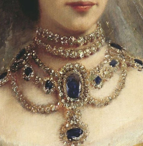
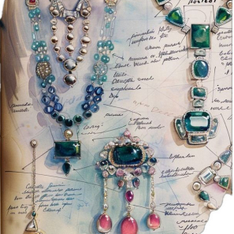
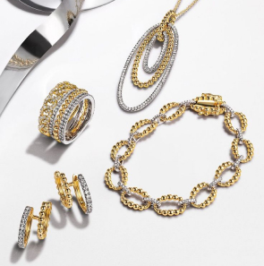
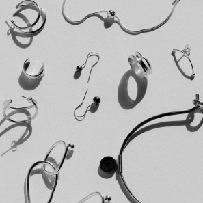

A Timeless Journey: The Story of Jewelry Evolution
INTRO

(17th-18th c.) 바로크 시대
대담하고 화려한 디자인.
프랑스 왕실 스타일의 영향을 받음.

(1920-1940) 아르데코 시대
색채의 보석을 활용한 주얼리가 인기.
대칭성과 기하학적 디자인.

(1980-1990) 1980-1990년대
과시적이고 대담한 스타일.
중독적이고 화려한 골드 주얼리.

(2000-2024) 2000년대 이후
심플한 골드, 실버 주얼리가 중심.
커스터마이징과 맞춤형 주얼리가 인기.
TREND
Trends News
2024년 주얼리 트렌드는 과감한 디자인과 지속 가능성에 중점을 두고 있습니다.
구조적이고 조각적인 디자인은 현대 건축과 추상미술에서 영감을 받아
기하학적이고 대칭적이지 않은 독특한 형태로 표현됩니다. 또한, 미스매치
스타일이 유행하며, 서로 다른 길이나 디자인의 쥬얼리로 개성을 강조합니다.